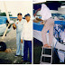
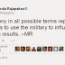

Social Media තියෙන්නේ Fun ගන්න.(ද).?
මාතලන් | Maathalan | Yesterday
ලංකාවේ Social Media වල සිඳුවන්නේ කුමක්ද කියන දේ, සාමාන්ය මහජනතාවට හඳුන්වා දීමේ මූලිකත්වය ගත්තේ, චානුක වත්තේගමයන්. ඊට පස්සේ, නාලක ගුණවර්ධණ. "රාවයේ", "සිව් මංසල කොලුගැටයා" නමින් ලියන්නේ, නාලක ගුණවර්ධන. ඔහු දිගින් දිගටම Social Media ලංකාව තුල හැසිරෙන ආකාරයත්, ළෝකයේ එහි ඇති බලවත් කම ගැනත්, එමගින් කළ විප්ලව ගැනත්, දිගින් දිගටම
I Miss You [EP 09] | ඔබ නැතුව පාළුයි… [සිංහල උපසිරැසි සමඟ]
බයිස්කෝප් සිංහලෙන් | Yesterday
ජන් වෝ කඵ පෙට්ටිය හොයා ගන්නවනේ. ඒකේ කව්ද ඉන්නේ කියලා ඔයාලට අද කොටසින් බලාගන්න පුඵවන්. සු යොන්ව එයාගේ අම්මාට මුන ගැහෙනවා. එයා තමන්ගේ දුවව අදුර ගනියිද? අද කොටසින් ඒක බලා ගන්න පුඵවන්. ටොරන්ට් එක තුල සියලුම කොටස් ඇතුලත් වෙනවා. එයින් අවැසි කොටස පමණක් ඔබට බාගත කරගන්න පුළුවන්. එයට
නාමල් රාජපක්ෂටත් මරණ තර්ජන...මම කිසිම වරදක් කර නෑ...
lanka day | Yesterday
තමාට මරණ තර්ජන එල්ල වී ඇතැයි කියමින් පාර්ලිමේන්තු මන්ත්රී නාමල් රාජපක්ෂ මහතා තංගල්ල පොලීසිය පැමිණිලි කර තිබේ.ඊයේ සවස මන්ත්රීවරයා එලෙස පැමිණිලි කර ඇත.දුරකථනයකින් අමතා තමාට මරණ තර්ජන කර ඇති බවට නාමල් රාජපක්ෂ මහතා පැමිණිලි කර ඇති බව තංගල්ල පොලීසිය කියයි.මේ අතර බස්නාහිර පළාත් සභා මන්ත්රී උදය ගම්මන්පිල මහතා ද තමාට
පාප්වහන්සේ දිව්ය පූජාවේදී භාග්යවත් ජුසේවාස් පියතුමන් ශාන්තුවරයට ඔසවා තබයි
KaraLiya.com | Yesterday
අතිඋතුම් ශූද්ධෝත්තම ෆ්රැන්සිස් පාප්වහන්සේ විසින් මෙහෙයවන ගාලූමුවදොර විශේෂ දිව්ය පූජාව මේ වන විට පැවැත්වේ. මෙම පූජාව සඳහා උන්වහන්සේ ගාලූමුවදොර පිටියට පැමිණියේ විවෘත
ජනතා අදිකරණය (40) ;- ඇනසලින් ප්රනාන්දු (දයා පතිරණ ගාතනය ) නඩුව.
Chitrangi's Weblog | Yesterday
මේ ශේෂ්ට්රදිකරණයේ විබාග වූ අංක 18/87 දරන මුලික අයිතිවාසිකම් නඩුවේ තීන්දුවේ සරන්ශයයි. පෙත්සම්කරු වර්ණකුලසුරිය ඇනසලින් ප්රනාන්දුය. වගයුත්තරකරුවන් වුයේ හලාවත, බණ්ඩාරගම සහ කළුතර පොලිස් ස්ථාන වල ස්ථානදිපතිවරුන් එවකට පොලිස්පතිවූ සිරිල් හේරත් නීතිපති ශිවා පසුපති සහ හෙන්රි ඇලෙක්සැන්ඩර් පිරිස්ය. එය විනිසුරු ප්රනාන්දු, විනිසුරු අමරසිංහ සහ විනිසුරු කුලතුංග යන ත්රිපුද්ගල ශේෂ්ට්රදිකරන විනිසුරු මඩුල්ලක්
රන්ජන් ‘මාතර සුනිල්’ බව පිළිගනී
KaraLiya.com | Yesterday
රන්ජන් රාමනායක යනු චිත්රපට ලෝකයේ මෙන්ම දේශපාලන කරළියේද සිටින දඩබ්බර චරිතයකි. ඒ නිසාම ඔහුට මුහුණදීමට සිදුවන අකරතැබ්බද බොහෝය. මීට මාස දෙකකට පමණ
පාප් වහන්සේ පිළිගන්න හිටපු ජනපති නොගියේ ඇයි?
KaraLiya.com | Yesterday
අති උතුම් ෆ්රැන්සිස් පාප් වහන්සේ ඊයේ(13) ලංකාවට පැමිණි අතර මේ වෙනුවෙන් රජය චාම් එහෙත් සිත්ගන්නා සුළු වැඩසටහනක් සංවිධානය කර තිබුණි. පාප් වහන්සේට
Mini Budget on Jan. 29
Colombo Gossip News | Yesterday
w;HjYH NdKav 10 ñ, wvq lrkak Èk fohswhjeh f.kak bkak ojfiau t;=ug ú/oaOj fld<T Widúfha uq,H jxpdjla .ek kvqjlaWidúfha uq,H jxpdjla .ek kvq ;shk flfklag uqo,a weu;slu §u hymd,kfha ,laIKhlakj rcfha Èk ishfha jevms<sfj, hgf;a w;HjYH NdKav 10l ñ, wvq ,nk 29 jeksodg lrk nj uqo,a wud;H rù lreKdkdhl
Police found hidden two seater plane
Sri Lanka News | Yesterday
Police found a two seater plane hidden at a storage unit at Narahenpita Economic Centre. The police caried out the raid after people called them to inform that a group was attempting to remove a plane from the Narahenpita Economic Centre.
මෛත්රී පාර්ශවයට පාර්ලිමේන්තු බහුතරය හිමිවේ
KaraLiya.com | Yesterday
ජනාධිපති මෛත්රීපාල සිරිසේන මහතාගේ පාර්ශවයට රාජපක්ෂ ආණ්ඩුවේ හිටපු ඇමතිවරුද බොහෝ දෙනෙක් සහය පළ කර ඇති අතර ඒ හේතුවෙන් මේ වනවිට ඔවුන්ට පර්ලිමේන්තුවේ
බයිසිකලේ
නෙළුම් විල | Yesterday
මල්ලි සහ අය්යා බයිසිකලයක් වෙනුවෙන් මැරෙන්නට වුනත් ලෑස්ති වෙලා හිටියේ රස්තියාදුවේ ගිහින් බෙල්ල කඩා ගන්නට බවයි අක්කයි මමයි හිතා හිටියේ. හුන්නස්ගිරිය වාගේ කඳු පල්ලම් නැතත් අපේ ගෙවල් වලට යන පාර එක මට්ටමේ එකක් නොවේ. හැබැයි පල්ලම් බසිද්දී නොවේ හැන්දෑවට ගෙදර යද්දී නම් ඔය පොඩි උස මිටි තැන් හුන්නස්ගිරිය වගේමයි අපිට
සමාව ඉල්ලා හඬා වැටෙන්නද - ලක්ෂ්මන් විජේසේකර | Samawa Illa Hada Watennda - Lakshman Wijesekara - sinhala lyrics
෴ගී පැදුර෴ මියුරු පදවැල් - සිතැඟි ස්වරයෙන් | Yesterday
සමාව ඉල්ලා හඬා වැටෙන්නද ඔබ ආදරය කලේ..පරාද කර මා හද රිදවන්නද ඔබ ආදරය කලේ...ඔබ ආදරය කලේ...//තරු නැති කළුවර පාළු අහස් ගැබපුරා හදක් සේ පායා ආ ඔබ..//ඇයි මා අතැර ගියේ..සමාව ඉල්ලා...ඔබේ පෙමට වෙන්වූ මා හදවතහඳුනන්නට බැරිවී දෝ ඔබ හට...//ඇයි මා අතැර ගියේ..සමාව ඉල්ලා...ගායනය : ලක්ෂ්මන් විජේසේකරපද රචනය : බුද්ධදාස ගලප්පත්තිසංගීතය :
Supernatural [S08 : E10] | පීඩිත පන්තිය. [සිංහල උපසිරැසි සමඟ]
බයිස්කෝප් සිංහලෙන් | Yesterday
8.2 කථාවේ ආපු ඇල්ෆීව මතකනේ. එයාව ක්රව්ලිට අහුවෙලා බවත් මතකනේ. ඉතින් එයාව ක්රව්ලිගෙන් බේරගන්න ඕනේ වෙනවා කැස්ට. ඇත්තටම ඒක කැස්ගේ උවමනාවක් නෙමේ, කාගේ උවමනාවක්ද කියලා බලලම දැනගන්නකෝ. මේ වැඩේ කරන්න කැස් උදව් ඉල්ලන්නේ ඩීන්ගෙන්. මේ අතරේ සෑම් තවමත් අනුණේගේ පවුල් කැඩීමේ ව්යාපෘතිය කරගෙන යනවා. ඒක කොහෙන්ද කෙළවර වෙන්නේ කියලත් බලලම
The True History Of The Aircraft That Found In Narahenpita
Colombo Gossip News | Yesterday

kdrfykamsfgka u;=jQ .=jka hdkfha iene b;sydih fukakkdrdfyakamsg wd¾:sl uOHia:dkfha NdKav .nvdjl iÛjd ;snQ ieye,a¨ .=jka hdkhla Bfha miajrefõ fidhd .kakd ,§' mqoa.,hla fofofkl= úiska tu .=jka hdkh bj;a lr.ekSug hk njg ,enqKq T;a;=jlg wkqj fmd,Sish úiska tu .=jka hdkh fidhdf.k ;snqKs'miqj Ñ;%mg wOHlaIjrfhl= jk pkao%ka r;akï uy;d lshd isáfha tu
දිව්ය පූජා යාගයට එක්වීමට ගාලු මුවදොර පිටියට වාර්තාගත ජන ගඟක්.
Hot And Fast News | Yesterday
දිවයිනට සැපත් වූ අතිඋතුම් ෆ්රැන්සිස් ශුද්ධෝත්තම පාප්වහන්සේ අද (14) උදෑසන 8.30ට කොළඹ ගාලූමුවදොර පිටියේදී පවත්වන දිව්ය පූජා යාගය සදහා මේ වන විට සියලූ කටයුතු සූදානම් කර අවසන්. දිව්ය පූජා යාගය සදහා සහභාගිවීමට අතිවිශාල බැතිමතුන් පිරිසක් මේ වන විටත් ගාලූමුවදොර පිටිය වෙත පැමිණ ඇති අයුරු දැක ගන්නට ලැබෙනවා. ශ්රී ලංකා කතෝලික
TNA අමාත්යධුර ගැනීම පමා කරයි
KaraLiya.com | Yesterday
දෙමළ ජාතික සන්ධානය විසින් මෛත්රී පාලනය යටතේ පිහිටුවන ලද රජයෙන් අමාත්යධූර භාරගැනීම පිළිබඳව මෙතෙක් සථීර තීරණයක් ගෙන නොමැති බව එම සන්ධානයේ නායක
හුදකලා වූ පෙම්වතාණෙනි , ඔබ ඔතැනමද මම මෙතැනමද හැමදාම ?
මියැසියේ රස කතා | Yesterday
ගෞරවණීය සංඝරත්නයෙන්ද අන්යාගමික පූජක තුමන්ලාගෙන්ද කැබිනට් මණ්ඩලයෙන්ද කෑමමේස මණ්ඩලයෙන්ද අල්මාරි මණ්ඩලයෙන්ද සම්භාවනීය අමුත්තන්ගෙන්ද අවසරයි .ආදරණීය අම්මේ තාත්තේ මාමේ නැන්දේ ලොකුඅම්මේ ලොකුතාත්තේ පොඩිඅම්මේ පොඩිතාත්තේ අක්කේ අයියේ නංගියේ මල්ලියේ .දරුවනි අත දරුවනි බඩ දරුවනි භ්රූණයණි කලලයනි යුක්තානුවනි ඩිම්බයනි ශුක්රාණුවනි . මා මෙතනට පැමිණියේ ග්රීක ජනකතාවක් ආශ්රයෙන් නිර්මාණය කරනලද ලාංකික ජනකතාවක් ආශ්රයෙන් නිර්මාණය
Before I Go to Sleep (2014) | මට නින්ද යන්න කලින්… [සිංහල උපසිරසි සමඟ]
බයිස්කෝප් සිංහලෙන් | Yesterday
පළමුවෙන්ම මම ස්තූතිවන්ත වෙනවා හසන්ත වික්රමරත්න සොහොයුරාට මගේ පස්වෙනි උපසිරැසි නිර්මාණය විදිහට මේ සිනමා සිත්තමට, උපසිරැසි යෙදීමට මට භාරදීමට තීරණය කිරීම ගැන. ඇත්තටම මේක වෙනස්ම විදිහක හොඳ කතාවක්. මට නම් හොඳටම හිතට ඇල්ලුව. අභිරහස් හා ත්රාසජනක කියන වර්ගීකරණයට අයත් මේ සිනමා සිත්තම 2014 ඔක්තොම්බර් 31 වෙනිද තමයි නිකුත් කරල තියෙන්නෙ.
හෙට මගේ මංගල දිනයයි
One | Zero | Zero | Yesterday
හෙට මගේ මංගල දිනයයි. කවුළුවට බරදී සිටින මට පෙනෙන්නේ සැහැල්ලුවෙන් පාරේ යන කෙලි රංචුවකි. උන්ට මෙන් මටත් දවසක් තිබුණා මතකය.මා සිටින්නේ ගෙදරින් බොහෝ දුර නිලූ නැන්දාගේ ගෙදරය. නිලූ නැන්දාවත් නොසිටින්නට මම අද මෙලොව නොසිටිනු නොඅනුමානය. මගේ මංගල්යයට එක්වෙතොත් ඒ අම්මා පමණි. ඇයද නාවොත් පුදුම නොවෙමි. තාත්තා, අයියා, නංගී, අක්කා කිසිවෙකු
*** —— Arrow —— *** Season 1 _ Plot 2
බයිස්කෝප් මංසල | Yesterday
පලවෙනි plot එකේදි වගේ කතාව සම්පූර්ණයෙන්ම විස්තර නොකර කොමික් හා සම්බන්ධ වෙන සහ කතාවට ඉස්සරහට වැදගත් වෙන කරුණු ගැන විතරක් කතා කරන්න මම තීරණය කරා. ලංකාවේ බහුතරයක් දෙනා #Arrow සීසන් එක බලලා තියෙන නිසා ඉතින් කතාව හැමෝම දන්නවනේ ඒ නිසාත්, ගොඩ දෙනක් අහලා තිබ්බ නිසාත් කතාවෙ තියෙන #Easter_Eggs ගැනයි කතාවේ චරිත ගැන පොඩි#Review එකක් හිටින
නාරහෙන්පිටෙන් මතුවූ ගුවන් යානයේ ඉතිහාසය
Hot And Fast News | Yesterday
නාරාහේන්පිට ආර්ථික මධ්යස්ථානයේ භාණ්ඩ ගබඩාවක සඟවා තිබූ සැහැල්ලූ ගුවන් යානයක් සොයා ගන්නා ලදී. පුද්ගලයක් දෙදෙනෙකු විසින් එම ගුවන් යානය ඉවත් කරගැනීමට යන බවට ලැබුණු ඔත්තුවකට අනුව පොලීසිය විසින් එම ගුවන් යානය සොයාගෙන තිබුණි. පසුව චිත්රපට අධ්යක්ෂවරයෙකු වන චන්ද්රන් රත්නම් මහතා කියා සිටියේ එම ගුවන් යානය තමා සතුව පැවතිය එකක්
අයිසිස් සම්බන්ධව මගේ අදහස කුමක්ද?
Anver Manatunga | Yesterday
පසුගිය කාලයේදී මුස්ලිම් නොවන කිහිප දෙනෙකු අයිසිස් සංවිධානය සම්බන්ධව මගේ අදහස කුමක්දැයි පුද්ගලික පණිවිඩ එවා තිබුණත් මට ඒ සම්බන්ධව පිළිතුරු දීමට අවස්ථාවක් නොවීය. ඇත්තටම අයිසිස් සංවිධානය ගැන ලංකාවේ මුස්ලිම්වරුන් බහුතරයක් දෙනා තුල කිසිදු අදහසක් නැතිබව පලමුවෙන්ම කිව යුතුය. පසුගිය කාලයේදී ලංකාවේ මුස්ලිම්වරුන්ට ලංකාවේම ප්රශ්න තිබුණු නිසා අනුන්ගේ ප්රශ්න ගැන සොයන්නට
His Holiness Pope Francis arrived
Our Lanka | Yesterday
Pope Francis who arrived in the country this morning said that he hoped every word and action of Sri Lankan political and religious leaders will make a lasting contribution to the material and spiritual progress of all the Sri Lankans.Speaking at the Bandaranaike International Airport upon his arrival, the Pope
සජින් ද වාස් ගුණවර්ධගෛ් නිවසකට ප්රහාරයක් (VIDEO)
lanka day | Yesterday
පාර්ලිමේන්තු මන්ත්රී සජින් ද වාස් ගුණවර්ධන මහතාට අයත් ගාල්ල දෙල්දුව ප්රදේශයේ පිහිටි නිවසකට කිසියක් ප්රහාරයක් එල්ල වී ඇති බවවාර්තා වේ
නාරාහේන්පිට සඟවා තිබූ ගුවන් යානාවේ..අයිතිකරු කියන කතාව (Video)
lanka day | Yesterday
නාරාහේන්පිට ආර්ථික මධ්යස්ථානයේ තිබී කුඩා ප්රමාණයේ ගුවන් යානයක් සොයාගෙන තිබේ.කුඩා ප්රමාණයේ අබලන් වූ ගුවන් යානයක් මෙසේ සොයාගත් බව පොලීසිය සඳහන් කරයි.පොලිස් හදිසි ඇමතුම් අංශයට ලැබුණු තොරතුරකට අනුව පොලීසිය එම ස්ථානයට ගොස් ඇත. එසේ ගොස් සොයා බැලීමේදී දෙදෙනෙකුට පමණක් ගමන් කළ හැකි අබලන් වූ කුඩා ප්රමාණයේ ගුවන් යානයක් සොයා ගත් බව
Bribery charges filed against Rajapaksa family
Our Lanka | Yesterday
The Janatha Vimukthi Peramuna today (January 13) officially filed a written complaint of bribery charges with the Bribery Commissioner against former President Mahinda Rajapaksa, his two brothers former Minister Basil Rajapaksa and Defence Secretary Gotabaya Rajapaksa and his eldest son MP Namal Rajapaksa.
Harin Likely To Be Uva Chief Minister
Our Lanka | Yesterday
Opposition Leader of the Uva Provincial Council Harin Fernando today informed the Governor of the Province that he had secured the majority in the Council. Fernando had informed that he had the support of 17 members in the Council apart from the two seats held
Rajapaksa Sons To Lead Army & Navy Rugby Teams
Our Lanka | Yesterday
The Sri Lanka Rugby Union said that Yoshitha Rajapaksa would remain as the Captain of the Sri Lanka Navy Rugby team and Rohitha Rajapaksa would be the Captain of the Sri Lanka Army Rugby team despite speculations that the Rajapaksa sons will be pulled out of Rugby
හමුදා බලපෑම ගැන හිටපු ජනපති කියන කතාව
lanka day | Yesterday

තමා හමුදාව සම්බන්ධ කර ගනිමින් අවසන් ඡන්ද ප්රතිඵල වෙනස් කිරීමට ගත් උත්සහයක් සම්බන්ධයෙන් යන ප්රකාශ හිටපු ජනපති සිය ට්විටර් ගිණුමෙන් ප්රතික්ෂේප කර තිබේ.හිටපු ජනපති එහි සඳහන් කර ඇත්තේ එම ප්රකාශ හිතාමාතා කරන ලද ප්රකාශයන් බවයි.එම ගිණුමේ හිටපු ජනපති පහත පරිදි අදහස් දක්වා ඇත.තමා එවැන්නක් නොකළ බවත්, අවසන් ප්රතිඵලය තමා පිළිගන්නා
මහින්ද පරදිනබව දැනසිටියා බයට කිව්වෙ නෑ -- සුමනදාස අබේගුණවර්ධන
lanka day | Yesterday
ජනාධිපතිවරණයෙන් මහින්ද රාජපක්ෂ මහතා නියත වශයෙන්ම ජය ගන්නා බවට ජෝතිෂ්යෙව්දී සුමනදාස අබේගුණවර්ධන මහතා විසින් පසුගිය කාලයේ අනාවැකි පළකරන ලදී. ඒ අනුව ජනාධිපතිවරණය ප්රකාශයට පත් කිරීම, ජනාධිපතිවරණය පැවැත්වෙන දිනය, ජනාධිපතිවරණය දා හිටපු ජනපති විසින් ඡන්දය දැමිය යුතු වෙලාව ආදිය සියල්ල සකස් කරනු ලැබුවේ සුමනදාස අබේගුණවර්ධන මහතා විසිනි.හිටපු ජනපතිවරයාට තව වසර දෙකක
Gamanpila For Court Jester
The Crash Zone | Yesterday
 Udaya Gamanpila used who to be a very in good politician in the public’s eye has started...
Udaya Gamanpila used who to be a very in good politician in the public’s eye has started...
Udaya Gamanpila used who to be a very in good politician in the public’s eye has started... නාරාහේන්පිට ගබඩාවේන් මතුවූ "කුරුම්බැට්ටිය "
33000.lk | Yesterday
නාරාහේන්පිට ආර්ථික මධයස්ථානයේ ගබඩාවක තිබු මෙම සැහැල්ලු ගුවන් යානය ප්රකට චිත්රපට අධ්යක්ෂකයකු වන චන්ද්රන් රත්නම් මහතා විසින් පැවසුවෙ, ඔහුගේ චිත්රපට කටයුතු සඳහා ගෙන ආ බවත් එය යොශිත රාජපක්ෂ මහතා ගේ ඉල්ලීමකට අනුව ඔහුට ලබාදුන් බවත්ය.
සභාපති ධූරය එපා කියන රුවන්
33000.lk | Yesterday
ස්වාධීන රූපවාහිනි සේවයේ නව සභාපතිවරයා ලෙස රුවන් ෆර්ඩිනැන්ඩස් පත්කළ ද එම තනතුර බාරගැනිම ඔහු ප්රතිකේෂ්ප කර ඇත.මංගල සමරවිර ඇමැතිවරයාගේ ප්රධාන හිතවතකු වන ඔහු වත්මන් දේශපාලන බලපෙරලියෙ ප්රමුඛයකු ලෙස කටයුතු කළේය.නව පත්වීම පිළිබඳව 33000 ඔහුගෙන් විමසු අතර ඔහු කියා සිටියේ අග්රාමාත්ය රනිල් වික්රමසිංහ මහතා මෙම තනතුර භාරගන්නා ලෙස කියා සිටි නමුත්
විරාත් කෝලිගේ පෙම්වතිය අනුශ්කා ද?????? - Virat Kohli blows a kiss to Anushka Sharma
Pihiya-පිහිය | Yesterday
විරාත් කෝලි යනු මෙතෙක් ඉන්දීය ක්රිකට් ඉතිහාසයේ බිහිවූ හොදම සොයා ගැනීමයැයි පැවසීම වැරදි නැත.මන්ද යත් ඔහු තරම් ඉන්දීය ක්රිකට් වාර්ථා අළුත් කරන කෙනෙකු නොමැති වීමයි.පසුගිය දින කිහිපය තුලම කෝලිගේ නම ඉන්දියාව පුරා ප්රචලිත වුනේ ක්රිකට් නිසාම නෙමෙයි.ඒ කෝලි සහ බොලිවුඩ් සුපිරි නිලි අනුශ්කා ශර්මා අතර ඇතිවී තිබෙන ආදර සම්බන්ධය නිසාවෙනි.මෙයට
කෘත්රිම බුද්ධියේ දියුණුව පාලනය කරන්න! - ලෝක ප්රකට විද්වත්හු සංවර්ධිත රටවලින් ඉල්ලති
Exploring Science & Technology විද්යා ලෝකයේ නවතම දැනුම! | Yesterday
ලෝක ප්රකට විද්වතුන්, විද්යාඥයින්, අධිතාක්ශණික සමාගම් ප්රධානීන් රැසක්, විවෘත ලිපියක් මගින් ලොව සංවර්ධිත රටවල රජයන් වෙතින් කෘත්රිම බුද්ධි තාක්ශණයේ සංවර්ධනය පාලනය කොට වැඩදායි කටයුතු සඳහා පමණක් එම තාක්ශණය යොදාගැනීමට කටයුතු කරන ලෙස ඉල්ලා සිටිනවා.කීර්තිමත් භෞතික විද්යාඥ ස්ටීවන් හෝකින්ස්, ගූගල් සමාගමේ පර්යේෂණ ප්රධානී පීටර් නෝවිග් , ලොව ප්රථම පෞද්ගලික අභ්යවකාශ රොකට්ටුව
ශකිරාගේ දෙවැනි දරු උපත. - Shakira expecting baby No. 2
Pihiya-පිහිය | Yesterday
සුපිරි පොප් ගායිකා ශකිරා සිය දෙවැනි දරු උපතට සුදානම් වන බව වාර්ථා වනවා.ඇය මේ බව සිය ටුවිටර් සහ ෆේස්බුක් ගිනුම් මගින් ප්රකාශ කර ඇත.ශකිරා විවාහ වුයේ 27 හැවිරිදි සුපිරි පාපන්දු ක්රීඩකයෙකු වන ජෙරාඩ් පිකියු සමගයි.මොවුන් දෙපලට සිය කුළුදුල් දරුවා උපත ලැබුවේ මීට අවුරුදු කිහිපයකට පෙරදීය.
Around the World in Nine Photos
නැණත | Yesterday
Satisfy your travel desires without leaving the couch: check out the street photography tag in your WordPress.com Reader.
Around the World in Nine Photos
Ramblings of an Internetaholic | Yesterday
.jpg) Satisfy your travel desires without leaving the couch: check out the street photography tag in your WordPress.com Reader.
Satisfy your travel desires without leaving the couch: check out the street photography tag in your WordPress.com Reader.
Satisfy your travel desires without leaving the couch: check out the street photography tag in your WordPress.com Reader.